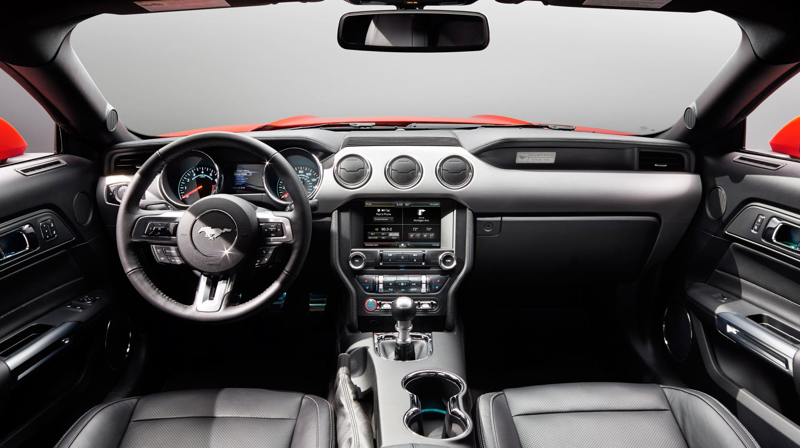
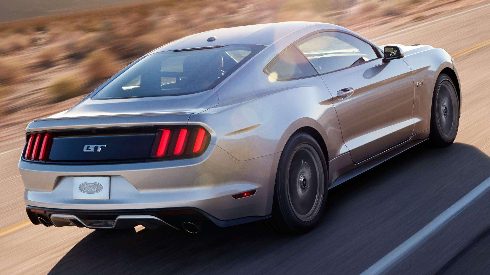
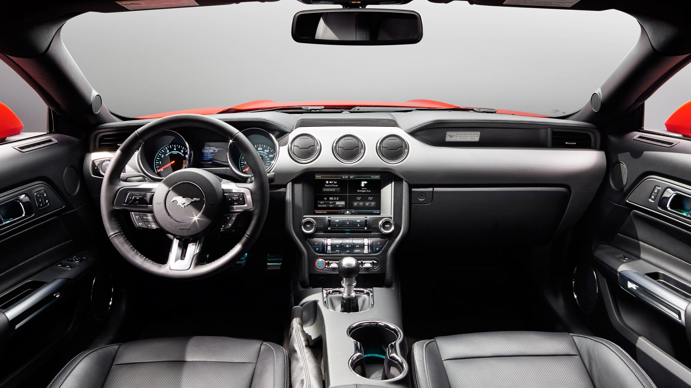
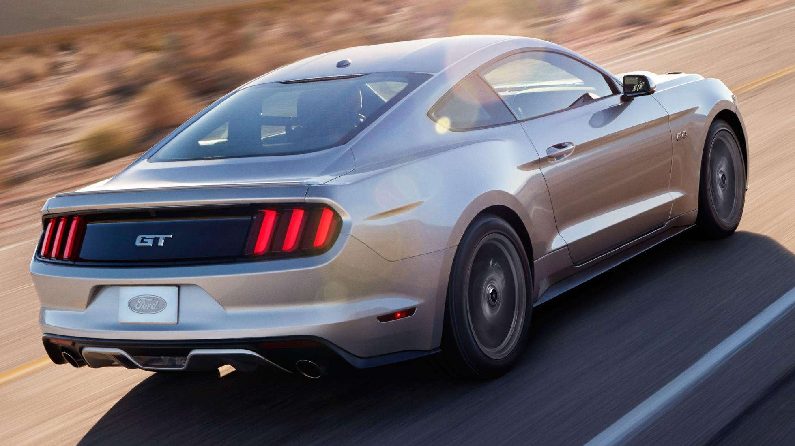
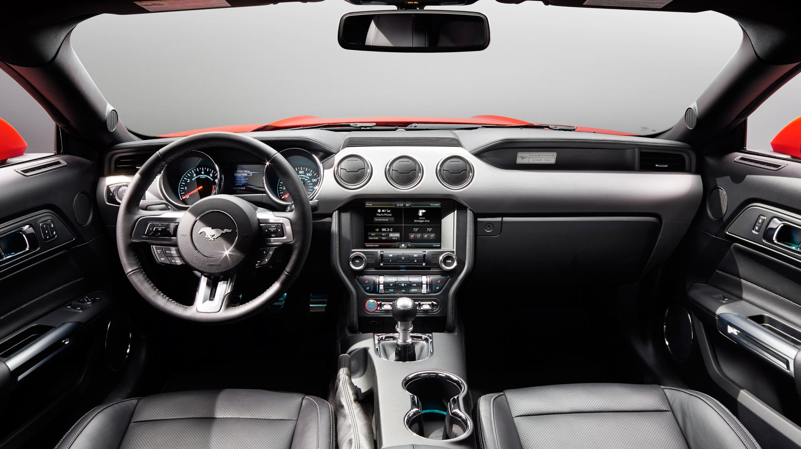
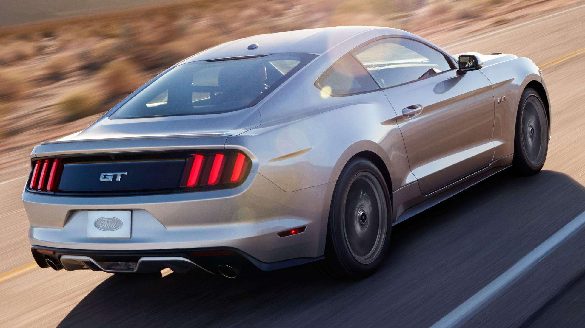

| MODELLO | Prezzo | l motore e disp. cilindri | CV | km/h | 0-100 | km/l | kg |
| Fastback | 38.000 | 4934 V8 | 421 | 250 | 5,4 | 10,6 | 1657 |


La Ford Mustang è disponibile in versione cabriolet o coupé a 2 porte. Il restyling 2015 condotto dalla casa americana è ispirato al design prima serie della fortuna automobile. Confermati i classici benzina 3.7 V6 e 5.0 V8 e introdotta una versione 4 cilindri EcoBoost 2.3, tutte con sospensioni posteriori indipendenti e sistema multilink. Per gli amanti del marchio Ford questa Mustang dal tetto basso e la coda corta è un must have. Le dimensioni (478x191x139 cm con un bagagliaio da 332 litri) la rendono agile e scattante, piacevole da guidare, si fa apprezzare per la tenuta di strada. Non esistono altre motorizzazioni che non siano a benzina per gli allestimenti previsti sia per la versione cabriolet che per il coupé, i prezzi vanno dai 38.000 € del coupé da 317 CV fino ai 49.000 € per la cabriolet da 422 CV.